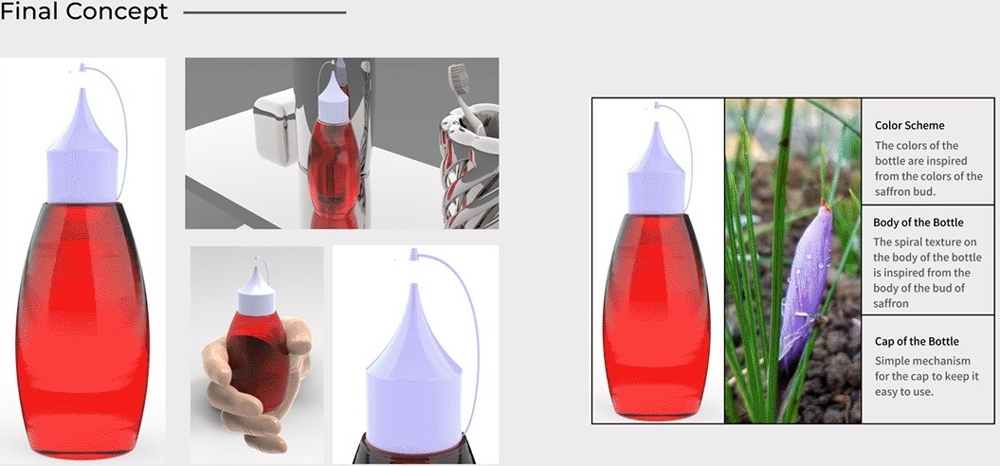
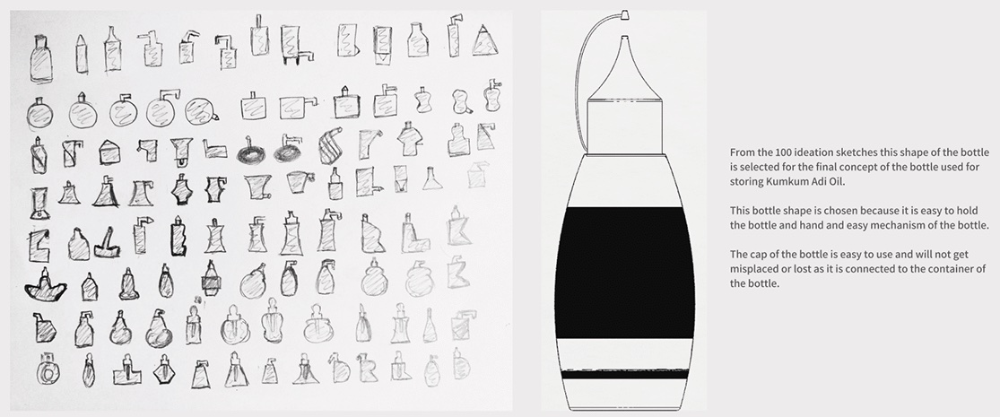
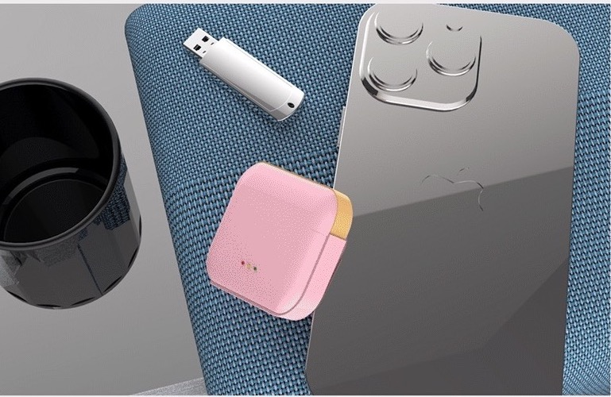

Research
Saffron, or Kumkumadi, oil is used in Ayurveda for acne and pimples from dry skin, dark pigments and circles under the eyes, and stretch marks; its antimicrobial properties nourish the skin. It is sold in dropper bottles with two recurring problems. Leakage: oil on the bottle thread causes skip threading and cap back-off, and is common when low-close torque is used in capping. Variable flow rate: when the dropper, cap and bottle are not matched to the oil's viscosity the dose is not accurate, and flash from the moulding process restricts the flow. Droppers are also not designed to measure a specific volume.
The moodboard went back to the plant: the shape of the saffron bud, and the oil's use in skin rejuvenation.
Ideation
From 100 ideation sketches, one shape was selected. It is easy to hold in the hand, the mechanism is simple, and the cap is connected to the container so it cannot be misplaced or lost.

Final concept
- Colour scheme: the colours of the bottle come from the colours of the saffron bud.
- Body: the spiral texture on the body comes from the body of the bud.
- Cap: a simple mechanism, tethered to the bottle, to keep it easy to use.
